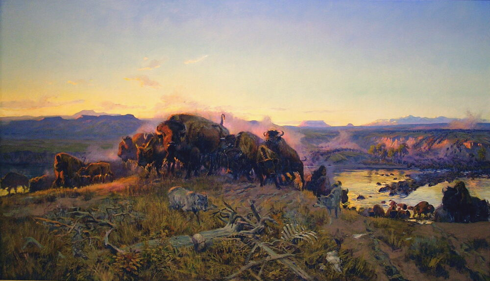
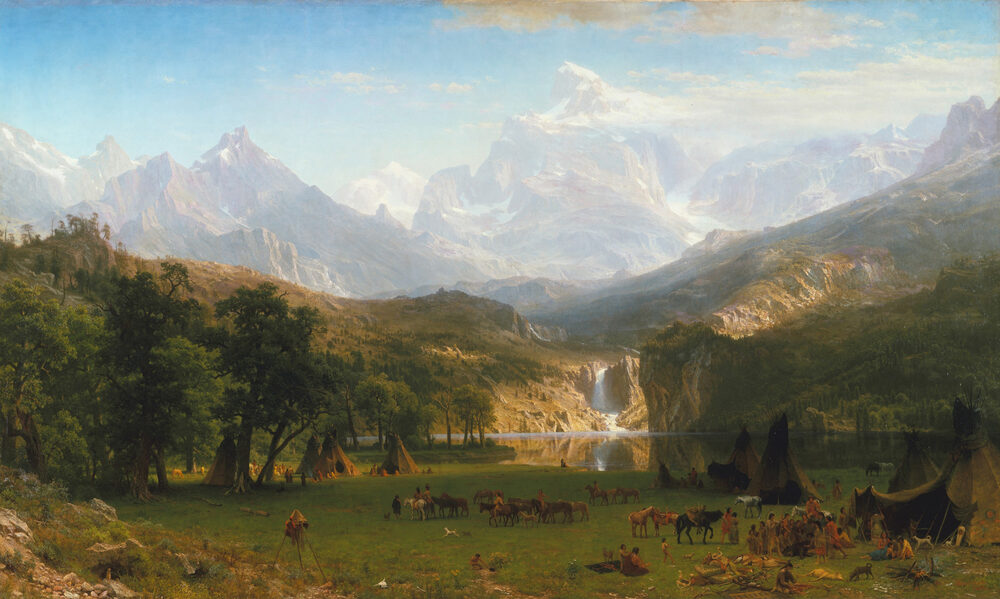

A2 · American History
The Text
Play the audio and follow along, then read it again on your own. Hover over a highlighted word to see what it means.
Listen & Read
Lewis and Clark: Exploring the West
Two officers, forty men, one river, and a map with nothing on it.
In May 1804, a boat left St. Louis and started up the Missouri River. On the boat were about forty men, a dog, and orders from the president.
The year before, the United States had bought a huge piece of land from France. Nobody in the government knew exactly what was in it.
President Thomas Jefferson wanted answers. Was there a river across the continent? What plants and animals lived there? Who lived there?
He chose two officers: Meriwether Lewis, his own secretary, and William Clark, an old army friend of Lewis. They called the group the Corps of Discovery.
They travelled west all summer. In the autumn they stopped and built a small fort near a Mandan village in today's North Dakota, and they stayed there for the winter.

There they met a young Shoshone woman called Sacagawea. She joined the expedition in the spring with her husband and her new baby.
In the summer of 1805 they reached the Rocky Mountains. This was the bad news: there was no easy river across America. They had to cross the mountains with horses, and they almost starved.

In November 1805 they finally saw the Pacific Ocean. Clark wrote in his journal that the men were happy and extremely wet. They built another fort and waited for the winter to pass.
They arrived back in St. Louis in September 1806, after two years and about 13,000 kilometres. Most people had decided they were dead.
They brought back maps, notes on 178 plants and 122 animals, and a great deal of information about the nations who were already living there. Only one man died on the whole journey, probably of a problem with his appendix.
Vocabulary
- an expedition — a long journey for a special purpose, such as exploring
- to explore — to travel somewhere to learn about it
- a continent — one of the large areas of land on earth, like Africa or Europe
- an officer — a person with an important position in the army
- a fort — a strong building where soldiers live and defend themselves
- to starve — to suffer or die because you have no food
- a journal — a book where you write what happens each day
- a nation — a people with its own land, language and government
- to reach — to arrive at a place
Interactive Exercises
Practice
Complete each exercise, then click Submit to see your score and an explanation for every answer.
Speaking & Writing
Discussion
There are no right answers here — use these to practice speaking, or write a short answer to each.
- Would you like to go on an expedition like this? What would be the hardest part for you?
- The men wrote in journals every day. Do you ever write about your day?
- What do you think the Mandan people thought when the boat arrived?